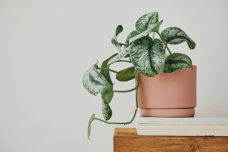

Интернет магазин комнатных растений "Зеленый Пассажир"
Вместе с нами растет жизнь
Сциндапсус

Skindapsus
Сциндапсус - это экзотическое растение с привлекательными листьями и уникальным
внешним
видом. Его листья обычно круглые и мясистые, а также часто имеют интересные узоры и цветовую гамму,
которая
может варьироваться от ярко-зеленой до более необычных оттенков.
Лавр обыкновенный (Laurus nobilis), также известный как лавровое дерево или лавровый
куст, - это вечнозеленое растение, широко известное своими ароматными листьями, которые используются в
кулинарии. Лавр произрастает в южных регионах Европы и Средиземноморья. Его листья имеют насыщенный
аромат
и
используются для придания вкуса различным блюдам, таким как супы, соусы и маринады. Кроме того, лавровое
дерево имеет декоративное значение и может вырастать в виде кустарника или небольшого дерева.
Бамбук (Bambusa) - это красивое и быстрорастущее растение, известное своими высокими
стеблями, которые называются колоссами. Это растение преимущественно встречается в тропических и
субтропических регионах и является важным источником строительного и декоративного материала.
Драцена (Dracaena) — это род декоративных растений семейства спаржевых
(Asparagaceae).
Они обладают длинными, узкими листьями и прекрасным внешним видом, что делает их популярными как
комнатные
растения. Драцены могут иметь разнообразные окраски листьев, включая зеленые, красные, желтые и
пурпурные
оттенки, что добавляет разнообразия и красоты в интерьере. Они также считаются очень неприхотливыми и
легкими в уходе, что делает их отличным выбором для начинающих садоводов.
Пальма небольшая в горшке - это миниатюрное растение из семейства пальмовых
(Arecaceae).
Она обладает красивой перистой листвой и компактным стволом, что делает ее отличным декоративным
элементом
для интерьеров. Эта мини-пальма легко ухаживать и подходит для украшения небольших помещений.
Растение семейства астровых Senecio, известное как крестовник, представляет собой
удивительно красивое и разнообразное семейство растений. Крестовики могут быть как многолетними, так и
однолетними, их родина - Африка, но некоторые виды встречаются и в других регионах мира. Характерной
особенностью крестовика являются его декоративные сочные листья и красивые соцветия.
Сциндапсус - это экзотическое растение с привлекательными листьями и уникальным
внешним
видом. Его листья обычно круглые и мясистые, а также часто имеют интересные узоры и цветовую гамму,
которая
может варьироваться от ярко-зеленой до более необычных оттенков.
Лавр обыкновенный (Laurus nobilis), также известный как лавровое дерево или лавровый
куст, - это вечнозеленое растение, широко известное своими ароматными листьями, которые используются в
кулинарии. Лавр произрастает в южных регионах Европы и Средиземноморья. Его листья имеют насыщенный
аромат
и
используются для придания вкуса различным блюдам, таким как супы, соусы и маринады. Кроме того, лавровое
дерево имеет декоративное значение и может вырастать в виде кустарника или небольшого дерева.